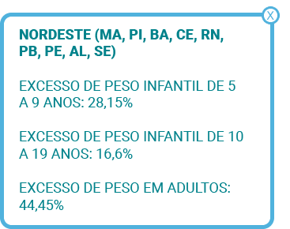
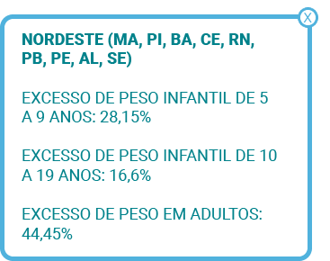

Com o passar dos anos, além de retratar o modo de pensar de uma época, tanto seus padrões de comportamento quanto suas contradições, o gênero publicitário acabou adquirindo mais funções sociais. Nesse sentido, é interessante observar como atualmente a publicidade, mais do que apenas divulgar um produto ou uma ideia, também produz padrões de comportamentos e de gostos que acabam atravessando a sociedade como um todo. Para exemplificar isso, observe o anúncio a seguir:
Clique ou toque para visualizar o conteúdo.
Anúncio com fundo na cor cinza. Há oito mulheres enfileiradas, vestidas com roupas íntimas de cores variadas. No centro da imagem, sobre as mulheres, é possível ler “The perfect body” (O corpo perfeito). Abaixo da frase, em tamanho menor, há os textos “Perfect fit. Perfect comfort. Perfectly soft. Explore the collection” (Ajuste perfeito. Conforto perfeito. Perfeitamente macia. Explore a coleção).
Nesse exemplo, é possível observar o anúncio da marca Victoria’s Secret, gigante da moda íntima feminina, para sua nova coleção chamada “body” (“corpo”, em inglês). Utilizando o duplo significado da palavra nesse contexto, entre o nome do sutiã e a palavra corpo, a chamada do anúncio é “the perfect body” (o body perfeito ou o corpo perfeito, em inglês). Na imagem, as modelos apresentam características em comum: corpo esguio, cabelos longos e, na maioria dos casos, a pele branca.
Ao unir tantas modelos com essa característica em conjunto com a chamada da campanha, mais do que apenas vender uma peça de roupa, a marca também acaba reforçando um ideal estético de corpo e deixa um recado um tanto nítido: o corpo perfeito, especialmente o feminino, é aquele magro, esguio, desprovido de estrias ou celulites e, de preferência, branco. Observe o mesmo movimento ocorrendo no anúncio a seguir.

Anúncio com fundo branco e a imagem de uma mulher branca e corpo magro, usando biquíni verde, no lado direito. À esquerda, há duas embalagens do produto Super Slim X com um selo da Anvisa. Na parte superior central, em fonte na cor verde, há a frase “Conquiste seu peso ideal e recupere a sua autoestima para sempre”. A seguir, também ao centro, há a seguinte descrição: “Sem sofrimento, sem dietas malucas, sem exercícios, sem engordar novamente e ainda: acelera o emagrecimento, elimine a gordura localizada, combate a celulite e evita as estrias, diminui inchaço e retenção de líquidos, dá energia e disposição ao corpo”.
Esse exemplo mostra a publicidade de um produto que promete o emagrecimento sem dietas nem exercícios físicos. Além de, possivelmente, ser uma propaganda enganosa (será falado sobre isso mais adiante), o anúncio da marca Super Slim também contribui para a construção de um padrão estético de “corpo perfeito”. No entanto, em vez de utilizar essa expressão, como na peça publicitária da marca de lingerie, é usada a expressão “peso ideal”, que, aliada à imagem de uma mulher com as mesmas características citadas nas modelos da Victoria’s Secret, também dá seu recado: o peso ideal é mais estético do que relacionado à saúde e deve, de preferência, ser magro.
Dessa forma, observe as expressões utilizadas pelas campanhas.
Corpo perfeito
Peso ideal
Perceba que as palavras “perfeito” e “ideal” qualificam, respectivamente, as palavras “corpo” e “peso”. Ou seja, caracterizam as palavras citadas, modificando-as. Esse tipo de palavra é chamado de adjetivo, que são palavras que acompanham outras palavras, dando-lhes qualidades e características. Observe os adjetivos também nos exemplos a seguir.
dietas malucas
boa mesa
jantar gostoso
Veja que os adjetivos se ajustam às palavras que os acompanham tanto em gênero (masculino e feminino) quanto em número (singular ou plural).
dieta maluca (feminino)
regime maluco (masculino)
corpo perfeito (singular)
corpos perfeitos (plural)
Na língua inglesa, os adjetivos têm a mesma função que no português, ou seja, são palavras que acompanham outras palavras, dando-lhes qualidades e características. Porém, o que pode causar estranheza é que os adjetivos são colocados antes das palavras qualificadas e caracterizadas, na língua inglesa. Perceba a diferença nos exemplos utilizados, em que os adjetivos estão grifados.
Clique ou toque para ouvir o conteúdo.
Simples, não é mesmo?
No decorrer dos estudos, você ainda verá outros tipos de adjetivos utilizados na língua inglesa, mas, por enquanto, fique por aqui e pratique um pouquinho.
Clique ou toque na resposta desejada para responder às perguntas
Selecione a alternativa em que o adjetivo está na ordem correta.
1) She has a ____________.
Muito bem, clique no ícone de play para ouvir a pronúncia correta.
Foi quase, clique no ícone de play para ouvir a pronúncia correta.
They live in a very _________.
Muito bem, clique no ícone de play para ouvir a pronúncia correta.
Foi quase, clique no ícone de play para ouvir a pronúncia correta.
They have a very ______________.
Muito bem, clique no ícone de play para ouvir a pronúncia correta.
Foi quase, clique no ícone de play para ouvir a pronúncia correta.
Cada vez mais, as diversas mídias têm apresentado soluções imediatistas para alcançar o sucesso estético do corpo, vinculando-o sempre à felicidade, como se ela estivesse presente somente em corpos magros e padronizados. A impaciência está associada ao exagero em busca do corpo ideal. Assim, as pessoas buscam em sites, revistas, blogs e vídeos na internet dietas milagrosas, uso de anabolizantes para ganhar músculos bem torneados e definidos, medicamentos que prometem “queimar” a gordura corporal para alcançar o objetivo o mais rápido possível sem o mínimo de esforço.
Os conceitos de beleza e saúde sofreram algumas alterações ao longo da história humana. Mas é necessário compreender os limites desses conceitos para que não causem prejuízos à saúde.
Imagem intitulada “A linha do tempo mostra que o padrão de beleza mudou muito ao longo da história”. Há uma linha do tempo contendo “Pré-história, Renascimento e Século XVIII” na parte superior da linha. Na parte inferior da linha, há as décadas de “1920, 1950, 1960, 1980 e 1990”. Todas as datas da linha do tempo são representadas por figuras de mulheres com o respectivo padrão de beleza de sua época. Por exemplo, no século XVIII, há uma mulher usando um vestido longo e volumoso, já na década de 90, há mulheres vestindo calças jeans e camisetas brancas.
Não é possível discutir um modelo ideal de beleza, mas sim alertar sobre as consequências da obesidade para a saúde. A Organização Mundial de Saúde (OMS) já classifica a obesidade como uma doença crônica, que é associada ao desenvolvimento de várias outras doenças, como diabetes tipo 2, síndromes metabólicas, problemas cardiovasculares etc.
Diante desses fatos, sabe-se que as pessoas são livres para seguir suas escolhas, como um padrão de beleza que as deixem bem e felizes. Porém deve ficar claro que as evidências mostram que é primordial evitar comportamentos que prejudiquem a saúde como um todo.
Para saber se você está no peso ideal em relação à altura, uma das referências é a técnica do Índice de Massa Corpórea (IMC), aconselhada para indivíduos sedentários que buscam uma noção de como estão fisicamente.
O IMC é obtido por meio de um cálculo. Assim, de acordo com o valor do resultado do IMC, a pessoa pode saber se está dentro, acima ou abaixo do peso ideal. Para obter o resultado do IMC, basta realizar um cálculo usando a seguinte fórmula.
Fórmula do IMC (Índice de Massa Corpórea): peso dividido por altura vezes altura.
Exemplo:
Uma pessoa que pesa 75kg e mede 1m80cm deve fazer o seguinte cálculo.
Resolvida a fórmula e obtido o resultado, deve-se checar a tabela a seguir.
Tabela do Índice de Massa Corporal (IMC) com uma classificação conforme resultados. Se o resultado for menor que 18,5, é classificado como baixo peso; de 18,5 até 24,9 é considerado peso normal; de 30 até 34,9 é considerado obesidade grau I; de 35 até 39,9 é considerado obesidade grau II; acima de 40 é considerado obesidade grau III ou mórbida.
Apesar de ser possível realizar o cálculo tendo os números necessários, em algumas pessoas, o teste não tem validade, como, por exemplo:
Visto que o IMC não leva em consideração o peso dos músculos.
Ilustração com dois homens com o mesmo peso, 80kg, e mesma altura: o homem do lado esquerdo apresenta um maior percentual de gordura no seu corpo, na região do abdômen. O homem do lado direito é do tipo atlético e apresenta um maior percentual de massa magra no seu corpo./p>
O cálculo não leva em consideração a redução natural dos músculos nessa faixa etária.
A fórmula não leva em consideração o crescimento do bebê.
Visto que o IMC não leva em consideração o peso dos músculos.
O cálculo não leva em consideração a redução natural dos músculos nessa faixa etária.
A fórmula não leva em consideração o crescimento do bebê.
Assista ao vídeo a seguir e conheça as diferenças entre o sedentarismo e a atividade/exercício físico.
O sedentarismo é caracterizado pela falta de atividade física no ser humano, não somente no caráter da prática desportiva, mas em toda sua amplitude, fazendo com que a saúde da pessoa entre em declínio e esteja mais suscetível ao surgimento de patologias.
Você se exercita na academia? Anda de bicicleta ou costuma dar aquela caminhada ao final do dia? Joga aquele futebol com os amigos no fim de semana? Enfim, você pratica algum exercício ou atividade física?
Aqueles que não praticam nenhuma atividade física, ou exercício físico, são chamados de sedentários.
O termo “sedentarismo” se refere à falta de atividade física do ser humano, não só quanto a esportes, mas qualquer tipo de atividade que envolva a musculatura, fazendo com que a saúde da pessoa entre em declínio e fique mais suscetível ao surgimento de patologias.
Devido à falta de comprometimento com atividades físicas, o sedentarismo é atualmente um problema de saúde pública e, segundo muitos profissionais, também é considerado como o mal do século.
Mas você sabe qual é a diferença entre atividade física e exercício físico?
A atividade física é todo e qualquer movimento feito pela musculatura do corpo, resultando um gasto energético. São atividades simples, como levar o seu pet para passear, subir e descer escadas ou, até mesmo, aquela varrida na casa.
Já os exercícios físicos são atividades sistematizadas, com movimentos repetidos e em sequência, relacionados à saúde, estética ou esporte de alto rendimento. Essas são atividades que requerem a supervisão de um profissional, como em musculação, ginástica rítmica ou artística, escolinha de futebol, artes marciais, entre outros.
De acordo com a Organização Mundial da Saúde, a OMS, existem recomendações mínimas de atividades físicas, como:
150 minutos semanais de atividades físicas leves ou moderadas, como caminhar, andar de bicicleta ou algum esporte mais leve, correspondendo a uma média diária de pouco mais de 20 minutos.
E 75 minutos semanais de atividade física de maior intensidade, como corrida, natação, pular corda, exercícios aeróbicos, entre outros, correspondendo a uma média diária de pouco mais de 10 minutos por dia.
Alguns dos benefícios da prática de exercícios e de atividades físicas são o aumento da força e função muscular, o gerenciamento de peso, a diminuição de risco de doenças cardiovasculares, a melhora da saúde mental e do humor, entre tantos outros!
Então, pergunto novamente: você pratica algum exercício físico? Se sim, o seu corpo e a sua mente agradecem!
Entre os benefícios que a prática de atividade física pode proporcionar, é possível citar alguns deles para que sejam melhor visualizados, como, por exemplo:
Conforme dito anteriormente, os conceitos de beleza sofreram alterações ao longo da história humana, pois cada civilização tem padrões estéticos diferentes, relacionados aos seus costumes.
A seguir, você estudará a Grécia Antiga e o ideal de beleza dessa civilização, com o objetivo de conhecer as influências que originaram alguns dos padrões estéticos de hoje.
Clique ou toque para visualizar o conteúdo.
Capa da revista em inglês Men’s Health (Saúde do Homem) com a imagem central de um homem jovem negro em posição frontal, vestindo calça de cor azul e sem camisa. Ele tem o corpo atlético, com músculos bem definidos. Em volta da imagem, há as chamadas com as matérias dessa edição.
Atualmente as sociedades têm diversas influências de sociedades antigas, como a Grécia. Muitos fundamentos das áreas de filosofia, artes plásticas, arquitetura, ciências humanas e exatas, entre tantas outras, foram herdados da Grécia Antiga e são utilizados até hoje. O mesmo se aplica à estética, com influências que ainda podem ser vistas nos padrões de beleza impostos à nossa sociedade atual, principalmente pelas mídias e pela moda.
A grande preocupação com a parte estética dos gregos fez com que eles elevassem o desenvolvimento físico ao mesmo nível do desenvolvimento intelectual. Para eles, um corpo saudável era tão importante quanto uma mente bem desenvolvida. Para os gregos, a associação da beleza e da sabedoria representava que o corpo ideal deveria ser harmônico e proporcional.
a Grécia Antiga, já havia uma grande distinção entre os homens e as mulheres. Os homens livres tinham o direito de se exercitar e praticar atividades físicas, esculpindo seus corpos como reflexo à beleza interior, equilibrando corpo e mente. Ou seja, quanto mais desenvolvido e esbelto, melhor a sua posição social. A própria prática militar era um exemplo de busca pelo corpo perfeito.
Já as mulheres não exerciam o direito à cidadania, permanecendo somente com as funções familiares da maternidade e do lar. A beleza feminina não era vista como algo essencial, pelo contrário, era um problema para a sociedade.
Na arte, os gregos esculpiam o corpo humano em mármore com uma simetria perfeita, distribuindo seu peso nas duas pernas em busca da proporção visual. Não havia qualquer pudor físico, com o corpo nu sendo evidenciado na maioria de suas manifestações artísticas.
Muitas esculturas retratavam corpos perfeitos para representar seus deuses, como esta escultura de Hermes, deus da magia, divinação, estradas e viagens.
A representação dos corpos perfeitos dos deuses influenciava a busca pelos corpos perfeitos dos gregos. Assim, como forma de demonstrar suas aptidões físicas e também de homenagear seus deuses, os gregos antigos criaram os jogos olímpicos, um evento desportivo realizado até os dias atuais, assim como diversas outras influências gregas.
Os gregos foram os pioneiros em retratar o corpo humano de forma realista, buscando um ideal de beleza que atingisse a perfeição física.
Para isso, eles utilizavam a proporção estabelecida pelos cânones, que é um sistema de proporção do corpo humano desenvolvido pelo escultor grego Policleto (450 a.C.). Segundo esse cânone, a proporção do corpo humano deve medir sete cabeças e meia de altura.
Os artistas gregos aceitavam essa medida como sendo perfeita. Dessa forma, eles representavam figuras importantes, como pessoas heroicas ou idealizadas, como os deuses, por exemplo. Pessoas simples ou sem funções importantes eram representadas em estaturas diferentes, menores que o padrão de Policleto. Veja o exemplo do cânone de Policleto a seguir.
Figura do cânone de Policleto, uma estátua masculina grega, esculpida em mármore, em posição frontal e nua. Ao lado, há um gráfico com sete cabeças enfileiradas na vertical, que representam o ideal de tamanho do corpo humano.
Conheça alguns exemplos da arte grega.
Clique ou toque para visualizar o conteúdo.
Foi no período Clássico (século V a IV a.C.) que os gregos atingiram a maestria no processo escultórico, retratando, com perfeição, o movimento dos corpos. A escultura grega Discóbolo, do artista Míron, é um exemplo desse período. Ela simboliza um atleta olímpico em ação, deixando em evidência a definição do corpo físico, principalmente do abdômen e do tórax ao se curvar. Essa é, sem dúvidas, a mais importante representação grega ligada aos esportes.
Figura de Discóbolo de Míron, esculpida em mármore, retratando um homem atleta nu, na posição de preparação para o lançamento de um disco, salientando a perfeição dos movimentos do corpo.
A Vênus de Milo é uma das estátuas gregas mais conhecidas da história, esculpida para representar a deusa grega Afrodite. Tornou-se um exemplo de beleza e sensualidade. Segundo a lenda, o artista Praxíteles, famoso escultor do séc. IV a.C., recebeu uma encomenda para esculpir a deusa Afrodite. Ele criou duas versões, uma vestida e outra não, como o corpo feminino nu não era algo aceito na época, essa versão foi rejeitada. A versão vestida perdeu-se na história.
Figura da Vênus de Milo, uma estátua de mármore esculpida em forma de corpo de mulher, posicionada frontalmente. Ela tem um manto sobre a cintura, com o abdômen e os seios despidos. A estátua não tem os dois braços.
No período Helenístico (século IV-II a.C.), em que a dramaturgia e a mitologia ganharam força nas representações, é possível encontrar a retratação da figura humana de forma mais expressiva. Na imagem a seguir, pode-se observar a cena mitológica grega de Laocoonte e seus filhos. Nela, o corpo de Laocoonte é representado com os músculos marcados, veias salientes e grande expressividade facial.
Estátua grega de mármore de Laocoonte e seus filhos. Laocoonte é a figura central, representado por corpo forte e músculos ressaltados e contraídos, tem a fisionomia de agonia e dor. Está sendo devorado por uma serpente que se enrola sobre suas pernas. Nas laterais estão seus filhos, que ele tenta salvar da morte.
Outro exemplo do período helenístico é a escultura Vitória de Samotrácia, também conhecida como Nice de Samotrácia, que se utiliza dos cânones gregos para sua representação. Impressiona pela perfeição em seus movimentos e pelo naturalismo da vestimenta drapeada no seu corpo. É, sem dúvidas, uma das mais sensacionais estátuas gregas existentes.
Estátua de Vitória de Samotrácia, uma figura mitológica grega esculpida em mármore, representando uma mulher alada (com asas). Ela tem um véu que cobre seu corpo. A figura não tem cabeça.
Os padrões estéticos gregos e o cânone desenvolvido por Policleto influenciaram diversos artistas ao longo da história da arte, um dos mais famosos exemplos que pode ser citado é Davi, do artista renascentista Michelangelo (1475). A estátua retrata os instantes anteriores à sua mítica batalha contra Golias e impressiona pela proporção e realismo.
Estátua de Davi, esculpida em mármore. Retrata um homem jovem, nu, em posição frontal, com os músculos do corpo bem definidos.
Foi no período Clássico (século V a IV a.C.) que os gregos atingiram a maestria no processo escultórico, retratando, com perfeição, o movimento dos corpos. A escultura grega Discóbolo, do artista Míron, é um exemplo desse período. Ela simboliza um atleta olímpico em ação, deixando em evidência a definição do corpo físico, principalmente do abdômen e do tórax ao se curvar. Essa é, sem dúvidas, a mais importante representação grega ligada aos esportes.
A Vênus de Milo é uma das estátuas gregas mais conhecidas da história, esculpida para representar a deusa grega Afrodite. Tornou-se um exemplo de beleza e sensualidade. Segundo a lenda, o artista Praxíteles, famoso escultor do séc. IV a.C., recebeu uma encomenda para esculpir a deusa Afrodite. Ele criou duas versões, uma vestida e outra não, como o corpo feminino nu não era algo aceito na época, essa versão foi rejeitada. A versão vestida perdeu-se na história.
No período Helenístico (século IV-II a.C.), em que a dramaturgia e a mitologia ganharam força nas representações, é possível encontrar a retratação da figura humana de forma mais expressiva. Na imagem a seguir, pode-se observar a cena mitológica grega de Laocoonte e seus filhos. Nela, o corpo de Laocoonte é representado com os músculos marcados, veias salientes e grande expressividade facial.
Outro exemplo do período helenístico é a escultura Vitória de Samotrácia, também conhecida como Nice de Samotrácia, que se utiliza dos cânones gregos para sua representação. Impressiona pela perfeição em seus movimentos e pelo naturalismo da vestimenta drapeada no seu corpo. É, sem dúvidas, uma das mais sensacionais estátuas gregas existentes.
Os padrões estéticos gregos e o cânone desenvolvido por Policleto influenciaram diversos artistas ao longo da história da arte, um dos mais famosos exemplos que pode ser citado é Davi, do artista renascentista Michelangelo (1475). A estátua retrata os instantes anteriores à sua mítica batalha contra Golias e impressiona pela proporção e realismo.
Caro estudante, para saber mais sobre o assunto, pesquise no livro “Os gregos antigos para leigos” (2012), do autor Stephen Batchelor.
Nesse contexto estudado, o termo “clássico” refere-se aos padrões usados pelos gregos e romanos. Esse mesmo padrão foi usado nos períodos renascentista, barroco e neoclássico, por exemplo.

Imagem com fundo verde e letras brancas contendo a definição do termo “clássico”: relativo à Antiguidade greco-latina ou aos grandes autores e à arte dos séculos XVI a XVIII: as línguas clássicas; o teatro clássico; a (...). De natureza habitual; corrente, corriqueiro: tomamos o clássico cafezinho.
Assista ao filme “300” (2006), dirigido por Zack Snyder, e entenda um pouco sobre a importância física para o exército grego.
Sinopse: Em 480 a.C., existe uma guerra entre a Pérsia, liderada pelo rei Xerxes, e a Grécia. Na batalha de Thermopylae, Leônidas, rei da cidade grega de Esparta, lidera seus guerreiros em desvantagem contra o massivo exército persa. Mesmo sabendo que a morte certa os espera, seus sacrifícios inspiram toda a Grécia a unir-se contra o seu inimigo comum.
Anteriormente, foi discutido como a publicidade tem o poder de construir padrões de beleza e de comportamentos. No entanto, essa perspectiva pode ser tanto negativa como positiva. Atualmente, há um crescente espaço reivindicado por grupos considerados minoritários, e isso tem modificado a maneira com que o gênero publicitário lida com essa questão. É o caso da campanha da marca Riachuelo, em parceria com o estilista Alexandre Herchcovitch.
Anúncio publicitário com fundo na cor rosa. Ao centro, há uma mulher branca, de cabelo loiro e longo. Ela veste camisa e shorts brancos e uma sandália de tiras na cor preta. Sua perna esquerda é uma prótese na cor azul.
Nessa peça publicitária, é possível observar uma pessoa com deficiência (PcD) como modelo para a divulgação das roupas. Isso demonstra o crescente espaço que pessoas PcD vêm conquistando nos meios de comunicação, o que pode interferir de maneira positiva em suas vidas, uma vez que uma maior representatividade desse público pode se traduzir em mais políticas públicas inclusivas, como o investimento em lombadas e caminhos adaptados nos centros urbanos, por exemplo.
A inclusão é assegurada por lei, conforme o Estatuto da Pessoa com Deficiência (Lei n.º 13.146/2015), que obriga o uso da Língua Brasileira de Sinais (Libras), entre outras linguagens fundamentais aos deficientes físicos. Nesse sentido, nas propagandas eleitorais ou campanhas governamentais e nos debates transmitidos pela televisão, é obrigatória a inclusão de um intérprete de Libras ou a transcrição do áudio para que pessoas surdas possam acompanhar as propostas dos candidatos do pleito. É por isso que, nesse tipo de produção, normalmente há um intérprete sinalizando o que está sendo dito em Libras.
Libras é a sigla para Língua Brasileira de Sinais, um tipo de linguagem utilizada especialmente por pessoas com deficiência auditiva. É preciso compreender que Libras não é a língua portuguesa sinalizada ou apenas mímica, como algumas pessoas acreditam. Como qualquer outra língua, ela tem uma estrutura gramatical e lexical própria, fazendo com que possa ser utilizada em qualquer processo comunicacional, tanto em discussões mais simples quanto mais complexas. A semelhança é tanta que essa língua também tem variações regionais.
Clique ou toque para visualizar o conteúdo.
Você deve estar curioso para conhecer a língua de sinais. Que tal aprender um pouco? Observe o alfabeto da língua brasileira de sinais a seguir e forme o seu nome.
Figura contendo o alfabeto da língua brasileira de sinais – Libras. Para cada letra do alfabeto, da letra “a” a “z”, há o desenho de uma mão com o símbolo correspondente a cada uma das letras.
Assim como qualquer língua que utiliza caracteres orais na sua construção, a Libras também se adapta aos diferentes contextos em que é utilizada.
Figura contendo a ilustração de cinco pessoas que conversam utilizando a língua brasileira de sinais – Libras. Há uma mulher e um homem do lado esquerdo e dois homens com uma mulher entre eles no lado direito. Todos se comunicam por meio dos sinais de Libras com as mãos.
Dessa maneira, a Libras é uma ferramenta extremamente importante para a comunidade surda no Brasil, uma vez que permite interações comunicativas e sociais de maneira mais natural. Além disso, há um outro método derivado da Libras que garante a inclusão de pessoas com deficiência auditiva e visual: a Libras-tátil. O surdo-cego acompanha os movimentos feitos pelo interlocutor ou intérprete pelo tato, ou seja, ele coloca as mãos sobre as mãos daquele que enuncia o discurso a fim de poder decodificar os movimentos sem a necessidade de vê-los.
Veja a seguir alguns cumprimentos e saudações em Libras.
Olá,
Neste vídeo vamos conferir algumas interpretações em Libras de algumas expressões do dia a dia, vamos lá!
Oi!
Tudo bem?
Como vai você e como você está?
Bom dia. Boa tarde. Boa noite.
Boa sorte.
com lincença.
Desculpe.
Tchau!
A Língua Brasileira de Sinais, Libras, é um conjunto de formas gestuais utilizada por pessoas, sejam elas surdas ou ouvintes.
Caso queira conhecer mais a respeito da Libras, você pode apertar o botão no lado direito de sua tela. Com ele, você pode ver a versão sinalizada de todo o nosso conteúdo.
Ao longo de nossos estudos, você aprendeu tanto sobre as principais características do gênero publicitário como a sua principal função. Além disso, foram analisadas algumas peças publicitárias para descobrir como elas transmitem os valores e as ideologias de seu tempo. Todos esses fatores demonstram o poder que o gênero publicitário tem na sociedade e, como disse o personagem “Tio Ben" a seu sobrinho “Peter Parker”, em “Homem-Aranha”, “com grandes poderes vêm grandes responsabilidades”.
Foi pensando nesse poder de transmissão de conteúdos, bem como de influência sobre os comportamentos sociais, que, no decorrer da história, alguns órgãos foram surgindo a fim de fiscalizar as propagandas veiculadas em grandes mídias. É o caso do Conselho Nacional de Autorregulação Publicitária (CONAR), por exemplo.
É o que evita, por exemplo, que as empresas possam fazer propaganda enganosa ou abusiva impunemente. Para melhor compreender o que é isso, leia o texto a seguir:
Clique ou toque para visualizar o conteúdo.
Perceba que os textos que você leu sobre as propagandas têm função referencial, função já discutida anteriormente. Ou seja, o texto tem foco na informação a ser transmitida ao leitor e, por isso, utiliza uma linguagem mais objetiva, trazendo exemplos que possam ilustrar os conteúdos trabalhados. Assim, considerando as informações presentes nos textos, responda às perguntas a seguir.
Clique ou toque na resposta desejada para responder às perguntas
Qual o principal objetivo do texto?
Parabéns! Resposta correta! Continue seus estudos!
O principal objetivo do texto é informar os deveres da empresa na construção de seus anúncios publicitários, bem como as possíveis consequências em caso de descumprimento.
A publicidade enganosa ou abusiva vai contra o Código dos Direitos do Consumidor (CDC), portanto, algo bastante sério, que pode trazer consequências tanto ao consumidor quanto às empresas envolvidas. Em relação ao consumidor, além da perda do dinheiro investido no produto, a utilização de produtos com base em informações errôneas pode causar acidentes, envenenamentos, entre outras consequências. Para as empresas, as consequências de propagandas enganosas ou abusivas são normalmente financeiras, por meio de multas e reembolsos aos consumidores. Como exemplo dessas consequências, leia o texto a seguir:
Fabricante do Nutella pagará indenização a consumidores
O grupo Ferrero, fabricante do conhecido creme de avelãs Nutella, pagará uma indenização de 3,05 milhões de dólares a consumidores nos Estados Unidos por não destacar o nível de gordura contido no alimento. A Ferrero EUA, filial da gigante italiana, pagará cerca de 4 dólares por cada pote vendido na Califórnia entre agosto de 2009 e janeiro de 2012, e em todo os Estados Unidos entre janeiro de 2008 e fevereiro de 2012.
Os consumidores poderão enviar os pedidos de indenização, sobre no máximo cinco potes, até 5 de julho, quatro dias antes da justiça confirmar a decisão. A Ferrero também se compromete a rever suas ações de maketing sobre o Nutella e a detalhar melhor seus elementos nutricionais. A decisão é resultado de uma ação promovida por Athena Hohenberg, mãe de um menino de San Diego, na Califórnia, afirmando que o Nutella, vendido como “exemplo de alimento equilibrado e saboroso”, não é tão saudável como propaga. Os principais ingredientes do Nutella são açúcar, óleo vegetal, cacau e leite em pó desnatado. A indenização não afetará em nada as contas do grupo, que em 2011, faturou 6,2 bilhões de euros, com 14 fábricas no mundo e mais de 21.600 funcionários. Vendido em mais de 100 países, o Nutella foi inventado em 1944, por Pietro Ferrero, em uma confeitaria de Alba, no norte da Itália. (Com agência France-Presse)
Lendo o texto, percebe-se que ele é um texto jornalístico. De fato, esse exemplo faz parte do chamado gênero notícia, texto bastante comum no cotidiano. Perceba que, uma vez que o gênero tem como principal objetivo transmitir um acontecimento, ele também tem função referencial, ou seja, tem como elemento de foco o contexto e busca transmiti-lo por meio de uma linguagem mais direta e objetiva.
Nesse exemplo, percebe-se que o foco do texto está no processo sofrido pela empresa Ferrero, grupo responsável pelo famoso creme de avelã, pelo o que foi considerada propaganda enganosa. Perceba que, mesmo que a empresa utilize a linguagem publicitária para dizer que seu produto é um exemplo de uma alimentação saudável e equilibrada, as informações contidas na tabela nutricional não condizem com o discurso, como bem pontua a notícia.
Isso, é claro, não é novo no ramo alimentício. Não é incomum que marcas utilizem, como maneira de atrair clientes, a promessa de oferecer uma alimentação saudável que auxilie na construção de um corpo que atenda aos padrões estéticos construídos socialmente. Para isso, as marcas usam vários recursos em suas campanhas para fortalecer essa ideia de que se trata de um produto saudável e que auxilia no processo de emagrecimento. Como exemplo, analise a imagem a seguir.
A imagem mostra um anúncio publicitário do biscoito “Nesfit”. Do lado direito, há a silhueta de uma mulher magra, mostrando o tórax, parte do rosto e braços levantados, na cor azul-escura. Ao lado esquerdo, há a frase “É gostoso sentir-se em forma”. Na parte central inferior, há cinco embalagens diversas do biscoito “Nesfit”.
Nessa figura, há o anúncio publicitário de uma marca de biscoitos que se diz fit, ou seja, que contém ingredientes saudáveis e pouco calóricos, podendo auxiliar no processo de emagrecimento. Perceba como a empresa tende a utilizar cores mais vivas e claras. Além disso, a silhueta da mulher apresentada tem o corpo magro, o que, aliado aos dizeres “É gostoso sentir-se em forma”, tende a apresentar alguns pontos de vista sobre o assunto.
O primeiro deles é que, nesta perspectiva, estar em forma é estar magro.
Já o segundo é o fato de que a bolacha é gostosa e auxilia neste processo de estar em forma.
Ou seja, se o senso comum compreende o processo de emagrecimento e de manter uma alimentação saudável como difícil e trabalhoso, o anúncio subverte esse posicionamento ao alinhar o bom sabor do produto com o seu potencial de auxiliar na busca por um corpo considerado padrão. Em suma, a marca promete que o processo de estar em forma deixa de ser algo complexo para tornar-se saboroso.
No entanto, apesar de os recursos visuais prometerem uma alimentação balanceada, os dados na realidade nem sempre conseguem comprovar o discurso. A nutricionista Aline Blanc, CRN 11100517, em seu perfil em uma rede social, no ano de 2016, fez uma comparação entre essa bolacha, vendida como fit, e uma outra também conhecida, que não utiliza desse chamariz publicitário. Segundo ela, ao compararmos as tabelas nutricionais de ambos os produtos, não existe uma diferença significativa no número de calorias nem nos macronutrientes, além de uma pequena quantidade de fibras que possam justificar o apelo publicitário de produto saudável ou produto fit. Leia a seguir a análise da especialista:
As quantidades de carboidratos (açúcares), proteínas, gorduras (a pior: Trans) e sódio são praticamente iguais e a quantidade um pouco maior de fibras presente no produto Nesfit não é suficiente para tê-lo como uma opção saudável e muito menos integral. Sem contar que também está presente em sua composição o TBHQ que é utilizado na conservação do produto (seu uso é controlado aqui no Brasil pelo Ministério da Saúde por apresentar risco de ocorrência de câncer, sendo que no Canadá e na comunidade Econômica Europeia, já não é permitido).
Sempre reparem seus ingredientes: O primeiro na descrição é o que tem em maior quantidade, ou seja, o produto analisado não pode ser considerado INTEGRAL, pois a farinha branca está em primeiro (maior quantidade) e a farinha integral em segundo.
Desconfie sempre dos alimentos industrializados. Alimento saudável não precisa vir escrito fit, diet ou light. Está na dúvida se o produto é saudável ou se é 100% integral?! Leia os ingredientes.
No texto acima, percebe-se um movimento da autora um pouco diferente em relação aos textos anteriores. Ela não está apenas apresentando informações, como um texto jornalístico, por exemplo, mas sim ela tem o objetivo de defender um ponto de vista. Em outras palavras, as informações apresentadas pela nutricionista servem como forma de comprovar uma opinião técnica a respeito de um assunto. Quando você faz esse tipo de texto, você está argumentando.
Clique ou toque para visualizar o conteúdo.
Descubra como isso funciona no caso do texto da nutricionista Aline Blanc. Para isso, observe a tabela a seguir:
Perceba que, para argumentar de uma maneira apropriada e convincente, é necessário apresentar dados da realidade. Em outras palavras, todos podem ter uma opinião sobre qualquer assunto, mas, para construir sua opinião de maneira coerente e bem fundamentada, é necessário ter informações bem legitimadas. Por exemplo, se você quer ter um posicionamento aprofundado sobre o quão saudável é o biscoito fit citado, além do posicionamento da nutricionista Aline Blanc, é indicado que você leia mais sobre hábitos alimentares (há um material interessante sobre isso produzido pelos professores de Ciências da Natureza), além de ouvir a opinião de outros especialistas.
Dessa forma, com todas essas informações, você estará mais do que preparado para desenvolver seu próprio posicionamento sobre esse assunto ou sobre qualquer outro sobre o qual você queira se debruçar. E o melhor: será o seu ponto de vista individual, e não apenas a repetição da opinião de outras pessoas. Entendido isso, veja novamente o assunto principal a seguir.
Como dito anteriormente, a publicidade enganosa no ramo alimentício não é algo tão incomum, e uma pesquisa rápida pode demonstrar alguns outros exemplos em que isso acontece. Para ajudar a resolver esse problema e instrumentalizar os consumidores para que eles possam denunciar e combater casos desse tipo, o Observatório de Publicidade de Alimentos fez um material explicativo sobre o assunto. Leia-o a seguir.
É proibido, mas acontece!
Entenda melhor por que é importante denunciar
Ao fazer publicidade de um alimento, é preciso que as empresas cumpram regras, como passar informações verdadeiras sobre suas características e ingredientes. Porém, nem sempre é o que acontece. Muitas vezes, anúncios publicitários e rótulos dão destaque a informações enganosas, valorizam ingredientes que estão em pouca quantidade no produto e confundem os consumidores.
A publicidade nos alimentos ultraprocessados pode ser enganosa, porque procura valorizar ou exagerar uma característica benéfica, ao mesmo tempo que mascara atributos ruins, como o excesso de açúcar, sódio e gorduras, em um produto que faz mal à saúde.
Clique ou toque para visualizar o conteúdo.
Muitas vezes, as pessoas se atraem pelos benefícios que o produto tem a oferecer, mas desconfie! Diversas informações estão escondidas no rótulo e na lista de ingredientes. Além disso, os nutrientes saudáveis podem não estar presentes em quantidades significantes para trazer um benefício para a saúde e não excluem os malefícios daquele produto.
Veja alguns produtos em que isso pode acontecer:
O produto que apresenta a informação de exclusão de determinado ingrediente ou nutriente precisa garantir que, na sua composição nutricional, ele não esteja presente. Para conferir essa informação, você pode verificar a lista de ingredientes! Um exemplo disso é quando um produto traz uma mensagem de que não há gordura trans em sua composição, mas observando a lista de ingredientes com atenção, a gordura está lá, disfarçada com outro nome, como óleo vegetal hidrogenado, gordura hidrogenada, entre outros.
Veja alguns produtos em que isso pode acontecer:
Um único alimento, de forma isolada, não traz benefícios para a saúde, como diminuir o colesterol, emagrecer, melhorar a sua concentração ou ajudar a dormir. O composto lácteo que diz servir para uma boa noite de sono da criança ou o complemento alimentar que promete melhorar sua disposição são enganosos. Desconfie também da margarina que diz diminuir o seu colesterol e o chá que garante perda de peso rápida. Fique de olho!
Veja alguns produtos em que isso pode acontecer:
A publicidade de alimentos pode aparecer na televisão, no rádio, em revistas e jornais. Na internet, elas podem estar em diferentes formatos, como em publicações nas redes sociais e até junto a youtubers e influenciadores (os famosos unboxings e recebidos, por exemplo). Além disso, há lugares que, às vezes, não são reparados, mas estão repletos de publicidade, como eventos em escolas, empresas e parques, materiais didáticos, panfletos, folders, banners e promoções. Os próprios rótulos dos produtos também funcionam como meio de publicidade, no qual os elementos para atrair os consumidores ganham mais destaque que as informações realmente importantes. Muitas vezes, é tão difícil identificar, que as pessoas não notam que estão sendo persuadidas a escolher determinado produto. Relate esses abusos. Denuncie qualquer suspeita!
No texto anterior, é possível perceber uma utilização da já citada Função Apelativa para além do gênero publicitário. Apesar de bastante informativo, o principal objetivo do artigo publicado pelo Observatório de Publicidade de Alimentos é a conscientização sobre possíveis abusos cometidos por empresas que acabam exagerando na propaganda de seus produtos. Perceba como o texto, assim como as propagandas, também utilizam verbos no modo imperativo, como em “Denuncie qualquer suspeita”.
Com esse exemplo, é possível perceber que a Função Apelativa da Linguagem e as também já estudadas Função Referencial e Função Emotiva não são específicas de apenas um gênero, mas sim de vários. Em outras palavras, as Funções da Linguagem se referem mais ao objetivo final da comunicação do que ao estilo de texto.
O texto acima, por exemplo, tem como objetivo a mudança de comportamento em relação aos produtos ditos naturais ou saudáveis. Isso não quer dizer que todos os alimentos que se dizem saudáveis não são, mas sim que é necessário estar atento e se basear em mais informações do que o que simplesmente está escrito no rótulo. Dessa forma, uma vez que o bem-estar de você, estudante, é importante, espera-se que essas informações auxiliem tanto em sua capacidade de leitura quanto em suas escolhas relacionadas à alimentação.
Afinal, é importante estar saudável para seguir nos estudos, e a alimentação é um fator primordial para se ter o corpo e a mente sadios.
Esqueça-se de padrões estéticos, mas tenha atenção ao seu peso. Além da questão estética, manter um peso adequado é uma forma de se manter também saudável. O sobrepeso e a obesidade estão entre os maiores problemas de saúde pública. No Brasil, uma em cada cinco pessoas são obesas e mais da metade da população das capitais brasileiras (54%) está com excesso de peso, informa a pesquisa Vigitel 2017. A Organização Mundial de Saúde afirma: a obesidade é um dos mais graves problemas de saúde a ser enfrentado. Em 2025, a estimativa é de que 2,3 bilhões de adultos ao redor do mundo estejam acima do peso, sendo 700 milhões de indivíduos com obesidade, isto é, com um índice de massa corporal (IMC) acima de 30.
Clique ou toque para visualizar o conteúdo.
 


SUL (PR, SC, RS)
Excesso de peso infantil de 5 a 9 anos: 35,9%
Excesso de peso infantil de 10 a 19 anos: 24,6%
Excesso de peso em adultos: 56,08%
SUDESTE (ES, RJ, SP, MG)
Excesso de peso infantil de 5 a 9 anos: 38,8%
Excesso de peso infantil de 10 a 19 anos: 22,8%
Excesso de peso em adultos: 50,45%
CENTRO-OESTE (MT, MS, GO, DF)
Excesso de peso infantil de 5 a 9 anos: 35,15%
Excesso de peso infantil de 10 a 19 anos: 22,15%
Excesso de peso em adultos: 48,30%
NORDESTE (MA, PI, BA, CE, RN, PB, PE, AL, SE)
Excesso de peso infantil de 5 a 9 anos: 28,15%
Excesso de peso infantil de 10 a 19 anos: 16,6%
Excesso de peso em adultos: 44,45%
NORTE (AC, AM, RR, RP, AP, PA, TO)
Excesso de peso infantil de 5 a 9 anos: 25,65%
Excesso de peso infantil de 10 a 19 anos: 17,45%
Excesso de peso em adultos: 47,20%
Alimentação saudável e atividade física são essenciais ao emagrecimento saudável. Associar alimentação adequada com atividade física promove a redução do excesso de gordura corporal e, consequentemente, um aumento da massa magra, além de auxiliar no combate de várias doenças crônicas, como diabetes, hipertensão e a própria obesidade. A alimentação não é o ponto exclusivo do tratamento da obesidade, mas é o principal componente na mudança de estilo de vida. Devido a isso, é muito importante saber analisar os alimentos consumidos e se realmente são benéficos para a saúde.
Clique ou toque para visualizar o conteúdo.
Os termos diet e light foram criados para facilitar e ajudar na identificação de diferentes tipos de alimentos. Quando se tem o diagnóstico de diabetes, a primeira ideia é que se tem é a de usar somente produtos dietéticos.
Clique ou toque para visualizar o conteúdo.
Os alimentos diet se destinam a grupos populacionais com necessidades específicas, pois esses produtos são isentos de um determinado nutriente. Na maioria dos casos, os diet são sem açúcar, mas é importante comprovar se o nutriente retirado foi mesmo o açúcar, e não gordura, sódio ou outro componente.
É importante que fique claro também que nem todos os alimentos diet apresentam diminuição significativa na quantidade de calorias e, portanto, podem não ser adequados a pessoas que querem emagrecer.
Além disso, os produtos dietéticos sem adição de açúcar podem conter outras formas de carboidratos que também interferem na glicemia, como frutose, lactose, amido ou maltodextrina.
Exemplos de alimentos diet
Balas sem açúcar; capuccino sem adição de açúcar; geleia sem adição de açúcar; biscoito waffer sem adição de açúcar.
Já os produtos light são direcionados a pessoas que buscam uma alimentação mais saudável, apresentando redução mínima de 25% em determinado nutriente ou calorias quando comparados ao produto convencional. A redução de calorias pode vir da diminuição no teor de qualquer nutriente, como carboidrato, gordura ou proteína, mas não significa que esses produtos sejam sem açúcar.
Exemplos de alimentos light
Bolo light, com teor reduzido de açúcar; açúcar light, com teor reduzido de açúcar e inclusão de adoçante; margarina light, com teor reduzido de gordura; refrigerante light, com teor reduzido de calorias pela retirada do açúcar, podendo ser chamado também de diet.
Muitas vezes, são consumidos produtos que exploram o lado fit (ou saudável), pensando que esse tipo de alimentos auxilia na busca pelo corpo ideal. Por isso, é importante realizar a interpretação dos rótulos para tirar uma conclusão adequada do produto que será consumido.
Comparativo nutricional entre um biscoito fit e um recheado. Do lado esquerdo, figura do biscoito Nesfit apresentando os seguintes nutrientes para a porção de 30 gramas, equivalente a 5 biscoitos: 133 calorias; 20g de carboidratos; 2,3g de proteínas; 4,9g de gorduras e 1,7g de fibras. Do lado direito, figura do biscoito recheado Negresco apresentando os seguintes nutrientes para a porção de 30 gramas, equivalente a 3 biscoitos: 134 calorias; 22g de carboidratos; 2g de proteínas; 4,4g de gorduras e 0,9g de fibras.
Nesse comparativo, foram observadas as orientações nutricionais de um biscoito fit e de um recheado. Ambos têm praticamente as mesmas quantidades de nutrientes.
ENEM 2011
O texto é uma propaganda de um adoçante que tem o seguinte mote: "Mude sua embalagem". A estratégia que o autor utiliza para o convencimento do leitor baseia-se no emprego de recursos expressivos, verbais e não verbais, com vistas a:
É importante perceber que os recursos não verbais são mais presentes no texto que os verbais, é necessário relacionar o pacote de açúcar ao corpo humano, associando o uso do açúcar com a gordura do corpo.
É importante perceber que os recursos não verbais são mais presentes no texto que os verbais, é necessário relacionar o pacote de açúcar ao corpo humano, associando o uso do açúcar com a gordura do corpo.
Clique ou toque para visualizar o conteúdo.
Assim como há a maneira correta de se escrever as palavras, também há regras de utilização correta dos acentos gráficos. Em primeiro lugar, é necessário compreender que esses sinais são utilizados para marcar a pronúncia adequada de determinadas palavras, sinalizando aos leitores qual a sílaba tônica delas, ou seja, a sílaba que deve ser pronunciada mais fortemente.
Nem todas as palavras necessitam do acento para marcar sua sílaba tônica, é verdade. Por exemplo, observe as palavras a seguir:
Caldo.
Lápis.
Perceba que as duas palavras têm a penúltima sílaba tônica. Nesses casos, essas palavras são chamadas de paroxítonas. Assim, apesar de as duas palavras serem paroxítonas, apenas a segunda é acentuada porque, de acordo com a regra gramatical, as palavras paroxítonas terminadas em “i(s)” são acentuadas, enquanto as terminadas em “o”, como “caldo”, não recebem acento.
Na imagem anterior, é possível perceber dois desvios referentes à acentuação gráfica. Em primeiro lugar, se o acento serve, entre outras coisas, para marcar a sílaba mais forte de uma palavra, não faz sentido que todas as sílabas da palavra “mocotó” estejam acentuadas. Além disso, a palavra “mocotó” deve ser acentuada com acento agudo (´), e não com circunflexo (^), uma vez que é o primeiro que indica a sonoridade aberta de sua última sílaba.
Pensando nisso, lembre-se de três detalhes importantes em relação à acentuação gráfica.
Todas as palavras têm sílabas tônicas, mesmo as que não têm acentos gráficos.
Cada acento representa um tipo de som.
Quando houver acento agudo (´) ou acento circunflexo (^) na palavra, ela terá apenas uma de suas sílabas acentuadas.
Para conhecer as demais regras de acentuação, assista ao vídeo a seguir.
Mais uma curiosidade aqui a respeito da língua inglesa! Palavras de origem inglesa não têm acento, e isso se deve ao fato de que, por aproximadamente trezentos anos, o inglês foi um idioma falado, mas não escrito, devido à educação não ser acessível à classe trabalhadora na época. Você se lembra que foi falado a respeito disso no início das atividades?
As palavras do inglês que têm acento são de origem estrangeira, outro tema já estudado: o estrangeirismo. Então, se você encontrar uma palavra acentuada em algum texto em inglês, já sabe que se trata um estrangeirismo na língua inglesa.
Como a acentuação gráfica visa aproximar a escrita da fala, marcando a sílaba tônica, como é possível saber então, no inglês, qual é a sílaba tônica?
Isso passa a ser muito mais um processo de percepção do que de assimilação de regras. Um exemplo de como o inglês desenvolveu a marcação de sílaba tônica é o caso da duplicação de letras para enfatizar a pronúncia estendida, como no verbo to see (ver). Isso contribui para que muitas palavras diferentes tenham sons semelhantes, tornando assim o contexto da conversa, do texto ou da fala extremamente importante para que seja possível diferenciar o emprego da palavra adequada, mas isso será descoberto ao longo da caminhada de estudos.
A HISTÓRIA real que inspirou o filme “300” – Baseado em fatos reais. 2016. 1 vídeo (11 min). Publicado pelo canal Fatos Desconhecidos. Disponível em: https://www.youtube.com/watch?v=gPqs3yIWCxQ. Acesso em: 3 maio 2022.
A.J. THOMSON; A. V. MARTINET. A Practical English Grammar. 4th. ed. Oxford: Oxford University Press, 2004.
Anúncio da marca Super Slim. Shopee, [s.d.]. Disponível em: https://shopee.com.br/Emagrecedor-Super-Slim-Detox-Original-640mg-2-Unidades-i.393580939.4182563870. Acesso em: 23 mar. 2022.
BLANC, Aline. Comparando a tabela nutricional de uma porção do biscoito [...]. Serra/ES, 15 mar. 2016. Facebook: @alineblancnutri. Disponível em: https://www.facebook.com/alineblancnutri/photos/a.682248835155155/1018338748212827/?type=3&scmts=scwspsdd. Acesso em: 4 maio 2022.
BORETTI, Gabriela. Libras tátil: você conhece esse método? Click Inclusão, 26 jun. 2020. Disponível em: https://www.clickinclusao.com/libras-tatil-voce-conhece-esse-metodo/. Acesso em: 26 abr. 2022.
BRASIL. Lei n.º 4.680, de 18 de junho de 1965. Dispõe sobre o exercício da profissão de Publicitário e de Agenciador de Propaganda e dá outras providências. Disponível em: http://www.planalto.gov.br/ccivil_03/leis/l4680.htm#:~:text=L4680&text=LEI%20N%C2%BA%204.680%2C%20DE%2018%20DE%20JUNHO%20DE%201965.&text=Disp%C3%B5e%20s%C3%B4bre%20o%20exerc%C3%ADcio%20da,Propaganda%20e%20d%C3%A1%20outras%20provid%C3%AAncias. Acesso em: 6 maio 2022.
BRASIL. Lei n.º 8.078, de 11 de setembro de 1990. Código de Defesa do Consumidor. Dispõe sobre a proteção do consumidor e dá outras providências. Disponível em: http://www.planalto.gov.br/ccivil_03/leis/l8078compilado.htm. Acesso em: 6 maio 2022.
BRASIL. Ministério da Educação. Instituto Nacional de Estudos e Pesquisas Educacionais Anísio Teixeira. Exame Nacional do Ensino Médio, 2011. Caderno 5 amarelo. Disponível em: https://download.inep.gov.br/educacao_basica/enem/provas/2011/05_AMARELO_GAB.pdf. Acesso em: 6 maio 2022.
CAMARGOS, Tamires. Quando falo que produto “fit” não é fit [...]. Divinópolis/MG, 8 fev. 2021. Facebook: @tamirespersonalnutri. Disponível em: https://m.facebook.com/tamirespersonalnutri/photos/quando-falo-que-produto-fit-n%C3%A3o-%C3%A9-fit-essa-compara%C3%A7%C3%A3o-exemplifica-bem-isso-qual-/876632729550355/. Acesso em: 22 mar. 2022.
CLÁSSICO. In: Dicio, Dicionário Online de Português. Porto: 7Graus, 2022. Disponível em: https://www.dicio.com.br/classico/. Acesso em: 22 mar. 2022.
CUNHA, Sonia. Escultura Davi de Michelangelo. Cultura Genial, [s.d.]. Disponível em: https://www.culturagenial.com/davi-de-michelangelo/. Acesso em: 22 abr. 2022.
DIANA, Daniela. Variações Linguísticas. Toda Matéria, [s.d.]. Disponível em: https://www.todamateria.com.br/variacoes-linguisticas/. Acesso em: 3 mar. 2022.
FABRICANTE da Nutella pagará indenização a consumidores. Veja, 28 abr. 2012. Disponível em: https://veja.abril.com.br/economia/fabricante-do-nutella-pagara-indenizacao-a-consumidores/. Acesso em: 17 mar. 2022.
FARLEX. The Free Dictionary. Online edition. Disponível em: https://www.thefreedictionary.com. Acesso em: 6 maio 2022.
GIAVAROTTI, Matheus. Cânone de Policleto. Saber Mais Arte, 6 mar. 2013. Disponível em: http://sabermaisarte.blogspot.com/2013/03/canone-e-proporcao.html. Acesso em: 22 mar. 2022.
GORDON, Matthew J. The West and Midwest: phonology. In: Kortmann, Bernd et al (org). A handbook of varieties of English. Berlin/New York: Mouton de Gruyter, 2004.
GUIMARÃES, Juliana. Padrão de Beleza. Significados, c2011-2022. Disponível em: https://www.significados.com.br/padrao-de-beleza/. Acesso em: 5 maio 2022.
LIBRAS: confira alguns cursos gratuitos online. Notícias Gazin, 24 abr. 2019. Disponível em: https://www.noticiasgazin.com.br/libras-confira-cursos-gratuitos-online/. Acesso em: 28 abr. 2022.
LINHA de biscoitos NESFIT® estreia sua primeira campanha publicitária. Grandes Nomes da Propaganda, 30 janeiro 2014. Disponível em: https://grandesnomesdapropaganda.com.br/anunciantes/1174/. Acesso em: 23 mar. 2022.
LUDIASBH. Laocoonte e seus filhos. Vírus da Arte, [s.d.]. Disponível em: https://virusdaarte.net/laocoonte-e-seus-filhos/. Acesso em: 22 abr. 2022.
LUDIASBH. Vitória de Samotrácia, Vírus da Arte, 8 jun. 2017. Disponível em: https://virusdaarte.net/vitoria-de-samotracia/. Acesso em: 22 mar. 2022.
Marcas apostam em roupas adaptadas. Estadão Conteúdo. In: Pequenas Empresas & Grandes Negócios, 26 dez. 2019. Disponível em: https://revistapegn.globo.com/Banco-de-ideias/noticia/2019/12/pegn-marcas-apostam-em-roupas-adaptadas.html. Acesso em: 24 abr. 2022.
MELATTI, Juliana. Sedentarismo. InfoEscola, [s.d.]. Disponível em: https://www.infoescola.com/saude/sedentarismo/. Acesso em: 4 maio 2022.
NUTRI+. NUTRI+ on Instagram: Quem nunca resolveu [...]. 2020. Pinterest: @nuutrimais. Disponível em: https://br.pinterest.com/pin/847028642409854492/. Acesso em: 3 maio 2022.
OBESIDADE no Brasil. Ampla, 16 dez. 2019. Disponível em: https://revistaampla.com.br/obesidade-no-brasil/. Acesso em: 3 maio 2022.
OS GREGOS Antigos para Leigos. Amazon, [s.d.]. Disponível em: https://www.amazon.com.br/Os-gregos-antigos-para-leigos/dp/8576087022/ref=asc_df_8576087022/?tag=googleshopp00-20&linkCode=df0&hvadid=379750974415&hvpos=&hvnetw=g&hvrand=8063826142284615473&hvpone=&hvptwo=&hvqmt=&hvdev=c&hvdvcmdl=&hvlocint=&hvlocphy=1001686&hvtargid=pla-840170349044&psc=1. Acesso em: 24 mar. 2022.
PORFIRIO, Anita. Frase da semana: “Com grandes poderes vêm grandes responsabilidades” – Stan Lee. Super Interessante, 21 dez. 2016. Disponível em: https://super.abril.com.br/coluna/superblog/frase-da-semana-8220-com-grandes-poderes-vem-grandes-responsabilidades-8221-8211-stan-lee/. Acesso em: 6 maio 2022.
Professor Micael. Grego Antigo - O Discóbolo, é uma estátua do escultor grego Míron, que representa um atleta momentos antes de lançar um disco [...], [s.d.]. Pinterest: Prof. Micael. Disponível em: https://br.pinterest.com/pin/507358714274578756/. Acesso em: 22 abr. 2022.
PROPAGANDA enganosa: saiba o que diz o Código de Defesa do Consumidor. Seu Direito: Proteste, 25 mar. 2021.Disponível em: https://seudireito.proteste.org.br/propaganda-enganosa-saiba-o-que-diz-o-codigo-de-defesa-do-consumidor/. Acesso em: 15 mar. 2022.
PUBLICIDADE Enganosa de Alimentos. OPA, c2022. Disponível em: https://publicidadedealimentos.org.br/publicidade-enganosa/. Acesso em: 20 mar. 2022.
SANTOS, Vanessa Sardinha dos. Limitações do IMC. Brasil Escola, c2022. Disponível em: https://brasilescola.uol.com.br/saude-na-escola/limitacoes-imc.htm. Acesso em: 11 mar. 2022.
SETEMBRO Azul: 6 curiosidades sobre a Libras. Blog Singularidades, 8 set. 2021. Disponível em: https://blog.institutosingularidades.edu.br/setembro-azul-6-curiosidades-sobre-a-libras/. Acesso em: 28 abr. 2022.
SOUZA, Vanessa. Alimentos diet e light são necessários para emagrecer? O Município Blumenau, 6 abr. 2021. Disponível em: https://omunicipioblumenau.com.br/saude-a-mesa-alimentos-diet-light-emagrecer/. Acesso em: 26 mar. 2022.
TRISTÃO, Isadora. Vênus de Milo: a curiosa história da estátua grega e seus mistérios. Conhecimento Científico, c2020. Disponível em: https://conhecimentocientifico.com/venus-de-milo/. Acesso em: 17 mar. 2022.
VICTORIA’S Secret é criticada por campanha do ‘corpo perfeito’. Extra, 29 out. 2014. Disponível em: https://extra.globo.com/mulher/corpo/victorias-secret-criticada-por-campanha-do-corpo-perfeito-14400279.html. Acesso em: 23 mar. 2022.
WRENCH, Scarlett. 6 razões para comprar a edição de novembro da Men’s Health. Men’s Health, 20 out. 2010. Disponível em: https://www.menshealth.com/uk/health/a34412098/buy-the-november-issue-of-mens-health/. Acesso em: 23 mar. 2022.